У цьому проекті ви дізнаєтеся, як запрограмувати власні музичні інструменти!
Крок 1: Спрайти
Перш ніж розпочати процес формування анімації, потрібно вибрати "предмет" для анімації. У Скретчі такі предмети називаються спрайтами.
Завдання для виконання
Спочатку, відкрийте Скретч-редактор. Онлайн Скретч-редактор знаходиться за посиланням jumpto.cc/scratch-new. Він має такий вигляд:
screenshot
Спрайт кота, який створився автоматично, — це талісман Скретч. Позбудьмось його, клацнувши по ньому правою кнопкою миші та вибравши функцію "вилучити".
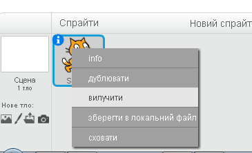
screenshot
Далі, натисніть кнопку "Оберіть спрайт із бібліотеки", щоби відкрити список усіх спрайтів Скретч.
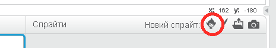
screenshot
Прокручуйте вниз, доки не побачите спрайт барабана. Натисніть на барабан, а тоді на кнопку "ОК", щоби додати його до вашого проекту.
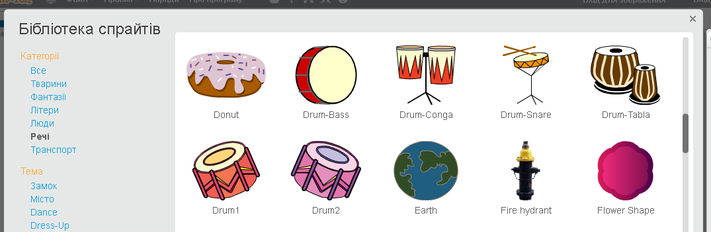
screenshot
Натисніть на піктограму "Зменшити" та клацніть на барабані кілька разів, щоби зменшити його розмір.
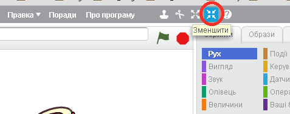
screenshot
Збережіть свій проект
Дайте ім’я вашій програмі, ввівши його в текстове поле у верхньому лівому куті.
Щоб зберегти проект, ви можете натиснути "Файл", а потім "Зберегти".
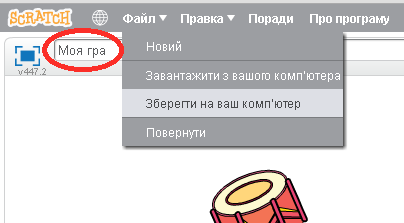
screenshot
Крок 2: Сцена
Сцена — це ділянка ліворуч, на якій ваш проект оживає. Думайте про неї, як про місце дійства, яким є справжня сцена!
Завдання для виконання
Зараз сцена біла й має доволі непримітний вигляд! Додаймо фон до сцени, натиснувши "Оберіть тло з бібліотеки".
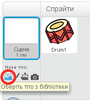
screenshot
Натисніть ліворуч "У приміщенні'", а потім виберіть будь-який малюнок зі сценою, і натисніть кнопку "OK".
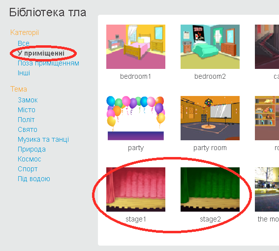
screenshot
Тепер ваша сцена буде приблизно такою:
screenshot
Крок 3: Створення барабана
Запрограмуймо барабан так, щоби він видавав якісь звуки, коли по ньому вдаряють.
Завдання для виконання
На вкладці "Скрипти" знайдіть блоки коду. Зверніть увагу, вони всі різнокольорові!
Натисніть на спрайт барабана й перетягніть ці 2 блоки до ділянки коду праворуч, переконавшись, що вони з’єднаються один з одним (як у конструкторі Лего):
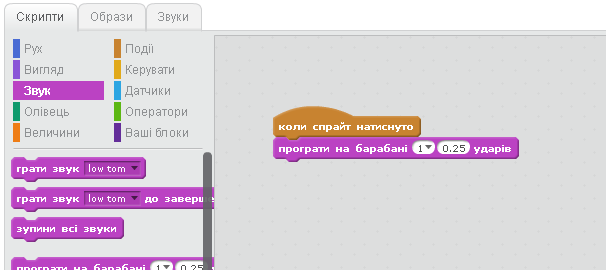
screenshot
Клацніть на барабан, щоби випробувати новий інструмент!
Збережіть свій проект
Виклик: Вдосконалюємо барабан
Як ви можете змінити звук, який видає барабан при натисканні?
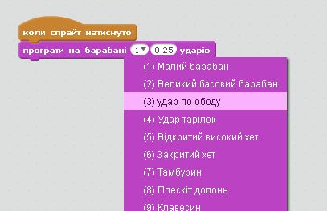
screenshot
Чи можете ви зробити так, щоб барабан видавав звук при натисненні пробілу? Вам знадобиться ось цей блок з групи Події:
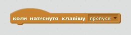
screenshot
Ви можете скопіювати існуючий код, клацнувши по ньому правою кнопкою миші й натиснувши "дублювати".
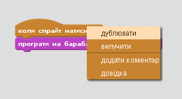
screenshot
Збережіть свій проект
Крок 4: Створення солістки
Додаймо до нашої групи солістку!
Завдання для виконання
Додайте ще 2 спрайти до сцени: співачку й мікрофон.
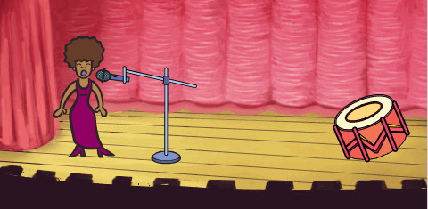
screenshot
Перш ніж ви зможете зробити так, щоб солістка заспівала, потрібно додати звук до спрайта. Переконайтеся, що ви вибрали солістку, тоді перейдіть на вкладку "Звуки" й натисніть "Оберіть звук із бібліотеки":
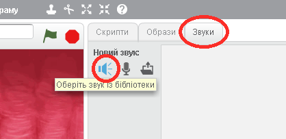
screenshot
Якщо зліва натиснути "Вокал", ви зможете вибрати відповідний звук для цього спрайта.
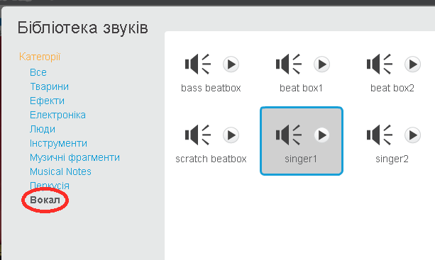
screenshot
Тепер, коли звук уже доданий, можна використати його в скрипті співачки:
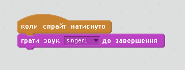
screenshot
Клікніть по солістці, аби переконатися, що вона співає.
Збережіть свій проект
Крок 5: Костюми - образи
Зробімо так, щоб солістка ще й виглядала, ніби вона співає!
Завдання для виконання
Ви також можете змінити вигляд солістки, коли по ній натиснуто. Для цього створіть новий образ. Перейдіть на вкладку "Образи", і ви побачите зображення солістки.
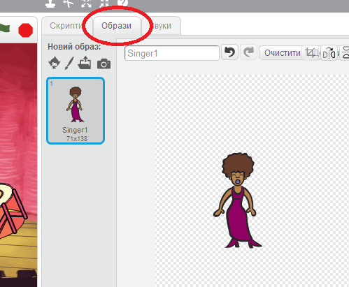
screenshot
Клацніть правою кнопкою миші на цьому образі та виберіть "Дублювати", щоб створити копію образу.
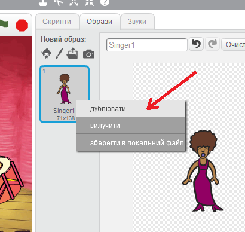
screenshot
Натисніть на новий образ (під назвою "Singer2"), потім виберіть інструмент "Лінія" й намалюйте декілька ліній, так щоб було схоже, ніби солістка співає.
screenshot
Зараз назви костюмів не надто корисні. Перейменуйте ці 2 образи на "співає" та "не співає", ввівши нове ім’я кожного образа в текстове поле.
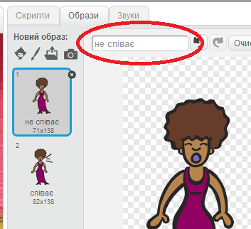
screenshot
Тепер, коли ви маєте 2 різні образи для солістки, ви можете обирати, який образ відображатиметься! Додайте ці 2 блоки до солістки:
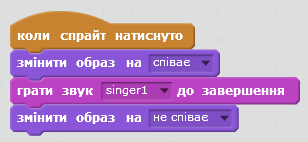
screenshot
Блок коду для зміни образа міститься в розділі Вигляд.
Перевірте вашу солістку. Під час натискання вона мусить виглядати так, ніби співає!
Збережіть свій проект
Виклик: Змінюємо вигляд барабана
Чи вийде у вас зробити так, щоб барабан змінював вигляд, коли по ньому "вдаряють"? Якщо вам потрібна допомога, ви можете скористатися інструкціями для зміни образу солістки.
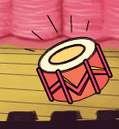
screenshot
Не забудьте перевірити, чи працює ваш новий код!
Збережіть свій проект
Виклик: Створи свій власний гурт
Використовуйте здобуті в цьому проекті навички, щоби сформувати свій власний гурт! Ви можете створити будь-які інструменти, але спершу подивіться на доступні звуки та інструменти, щоби зорієнтуватись.
screenshot
Проте, ваші інструменти не обов’язково мають бути практичними. Наприклад, ви могли б створити фортепіано, зроблене з кексів!
screenshot
Ви можете не лише використовувати наявні зображення, але й малювати свої власні.
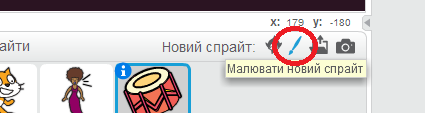
screenshot
За наявності мікрофона можна записувати власні звуки, або навіть використовувати веб-камеру, щоби вдаряти по ваших інструментах!